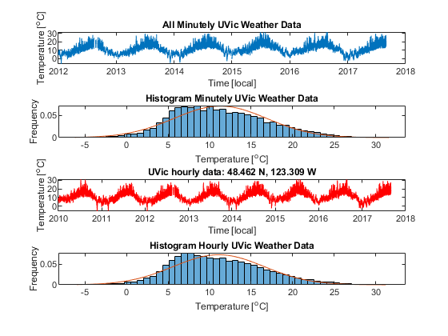
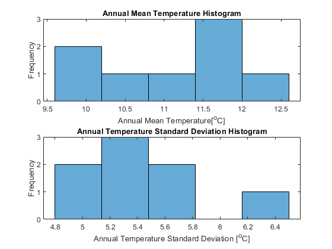

close all;
clear;
InH = load("data/AllStations_temperature_h_2017.dat");
[NN,MM] = size(InH);
tt_all = InH(3:NN,1);
Station_lon_all = InH(1,2:MM);
Station_lat_all = InH(2,2:MM);
NS = length(Station_lat_all);
NT = length(tt_all);
TTH_all = InH(3:NN,2:MM);
station_lon = 236.691;
station_lat = 48.462;
diff_lon = abs(Station_lon_all - station_lon);
diff_lat = abs(Station_lat_all - station_lat);
[~,iis] = min(diff_lon+diff_lat);
TTH_s = TTH_all(:,iis);
tt_start = datenum(2010,1,1,0,0,0);
tt_end = datenum(2017,8,31,0,0,0);
iit = find(tt_all >= tt_start & tt_all <= tt_end);
tt = tt_all(iit);
TTH = TTH_s(iit);
LW = 1;
FS = 18;
figure(1)
hold on;
subplot(2,1,1)
plot(tt, TTH, 'r')
xlabel('Time [local]')
ylabel('Temperature [^oC]')
title( sprintf('%4.3f N, %4.3f W',[Station_lat_all(iis), ...
360-Station_lon_all(iis)]) )
datetick('x')
InT = load("data\UVicSci_temperature.dat");
tt_start = InT(1); tt_end = InT(2); NT = InT(3);
tt_minute = linspace(tt_start, tt_end, NT);
data_minute = InT(4:NT+3);
bins = 50;
figure(1)
subplot(4,1,1)
plot(tt_minute, data_minute)
xlabel('Time [local]')
ylabel('Temperature [^oC]')
title("All Minutely UVic Weather Data")
datetick('x')
figure(1)
subplot(4,1,2)
histogram(data_minute, bins, 'Normalization','pdf')
xlabel('Temperature [^oC]')
ylabel('Frequency')
title("Histogram Minutely UVic Weather Data")
hold on;
x = (min(data_minute) : 0.1 : max(data_minute));
y = normpdf(x, nanmean(data_minute), nanstd(data_minute));
plot(x,y)
hold off;
figure(1)
subplot(4,1,3)
plot(tt, TTH, 'r')
xlabel('Time [local]')
ylabel('Temperature [^oC]')
title( sprintf('UVic hourly data: %4.3f N, %4.3f W',[Station_lat_all(iis), ...
360-Station_lon_all(iis)]) )
datetick('x')
figure(1)
subplot(4,1,4)
histogram(TTH, bins, 'Normalization','pdf')
xlabel('Temperature [^oC]')
ylabel('Frequency')
title("Histogram Hourly UVic Weather Data")
hold on;
x = (min(TTH) : 0.1 : max(TTH));
y = normpdf(x, nanmean(TTH), nanstd(TTH));
plot(x,y)
hold off;
disp("Minutely mean and std: " + ...
nanmean(data_minute) + " " + nanstd(data_minute))
disp("Hourly mean and std: " + nanmean(TTH) + " " + nanstd(TTH))
means = [];
stds = [];
for iYear = 2010:2017
tt_start = datenum(iYear,1,1,0,0,0);
tt_end = datenum(iYear,12,31,23,59,59);
iit = find(tt_all >= tt_start & tt_all <= tt_end);
tt = tt_all(iit);
TTH = TTH_s(iit);
means = [means ; nanmean(TTH)];
stds = [stds ; nanstd(TTH)];
end
figure(2)
subplot(2,1,1)
histogram(means, 5);
xlabel('Annual Mean Temperature[^oC]')
ylabel('Frequency')
title("Annual Mean Temperature Histogram")
figure(2)
subplot(2,1,2)
histogram(stds, 5);
xlabel('Annual Temperature Standard Deviation [^oC]')
ylabel('Frequency')
title("Annual Temperature Standard Deviation Histogram")
Minutely mean and std: 11.2953 5.609
Hourly mean and std: 11.0954 5.4765
 